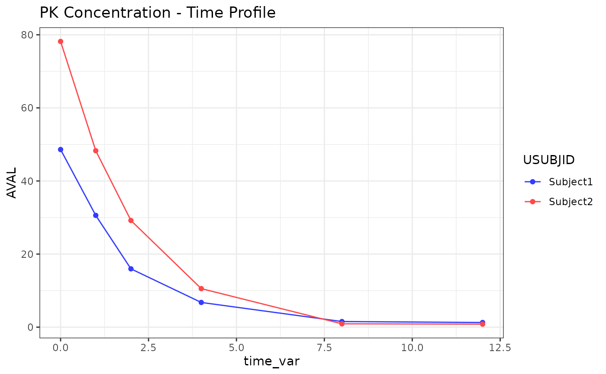

This function creates a ggplot2 line plot for pharmacokinetic (PK) data. It is designed to be flexible and can generate plots for both individual concentration-time profiles and mean concentration-time profiles. The function supports various customizations including log scales, faceting, error bars (for mean plots), and threshold lines.
Usage
g_lineplot(
data,
x_var,
y_var,
color_by,
facet_by = NULL,
ylog_scale = FALSE,
threshold_value = NULL,
dose_data = NULL,
palette = NULL,
sd_min = FALSE,
sd_max = FALSE,
ci = FALSE,
tooltip_vars = NULL,
labels_df = NULL
)Arguments
- data
A data.frame containing the data to be plotted. This should be pre-processed by either
process_data_individualorprocess_data_mean.- x_var
A character string specifying the column name for the x-axis.
- y_var
A character string specifying the column name for the y-axis.
- color_by
A character vector specifying the column(s) from the original dataset that are used to determine the color of the lines and points.
- facet_by
A character vector of column names to facet the plot by. Default is
NULLfor no faceting.- ylog_scale
A logical value (
TRUEorFALSE) indicating whether to use a logarithmic scale for the y-axis.- threshold_value
A numeric value for the y-intercept of the threshold line. Only used if
show_thresholdisTRUE.- dose_data
An optional data.frame containing dosing information. If not
NULL, dose lines will be added. Default isNULL. The data frame must contain the faceting variables (if any are used) and aTIME_DOSEcolumn for the x-intercepts.- palette
An optional named character vector of colors for the plot. The names should correspond to the levels of the
color_varin thedata. This is typically generated byget_persistent_palette.- sd_min
A logical value (
TRUEorFALSE). IfTRUE, plots the lower standard deviation error bars. (Only for mean plots).- sd_max
A logical value (
TRUEorFALSE). IfTRUE, plots the upper standard deviation error bars. (Only for mean plots).- ci
A logical value (
TRUEorFALSE). IfTRUE, plots a 95% confidence interval ribbon. (Only for mean plots).- tooltip_vars
Character vector of column names to include in the tooltip.
- labels_df
A data.frame for variable label lookups.
Plot Types
The function's behavior changes based on the arguments provided, for two main plot types:
Individual Plots: Set
y_var = "AVAL"The inputdatashould be fromprocess_data_individual.Mean Plots: Set
y_var = "Mean"The inputdatashould be fromprocess_data_mean. The argumentssd_min,sd_max, andciare only applicable to this plot type.
Examples
library(dplyr)
#>
#> Attaching package: ‘dplyr’
#> The following objects are masked from ‘package:stats’:
#>
#> filter, lag
#> The following objects are masked from ‘package:base’:
#>
#> intersect, setdiff, setequal, union
ind_data <- expand.grid(
time_var = c(0, 1, 2, 4, 8, 12),
USUBJID = c("Subject1", "Subject2")
) %>%
mutate(
AVAL = ifelse(USUBJID == "Subject1", 50, 80) * exp(-0.5 * time_var) + rnorm(n(), 0, 1),
PARAM = "Analyte1",
DOSEA = "Dose 1",
RRLTU = "hours",
AVALU = "ng/mL"
)
p <- g_lineplot(
data = ind_data,
x_var = "time_var",
y_var = "AVAL",
color_by = "USUBJID"
)
print(p)
